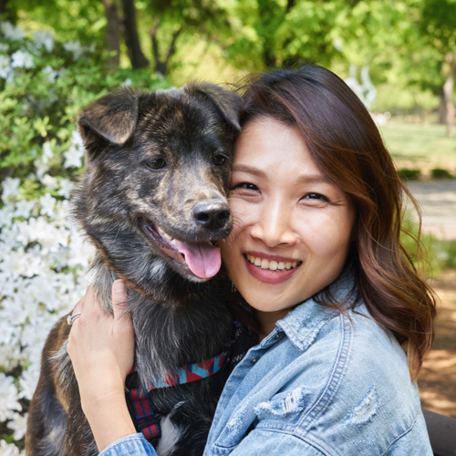
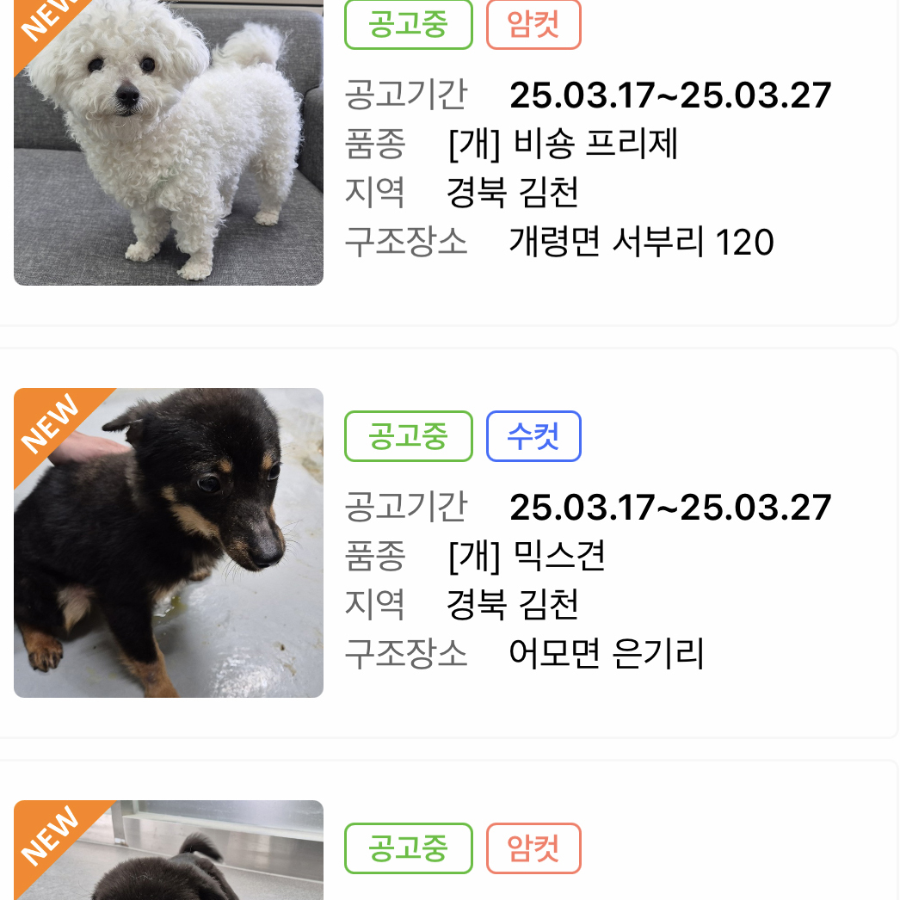
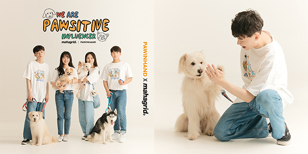
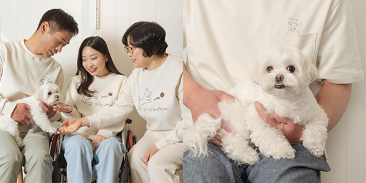
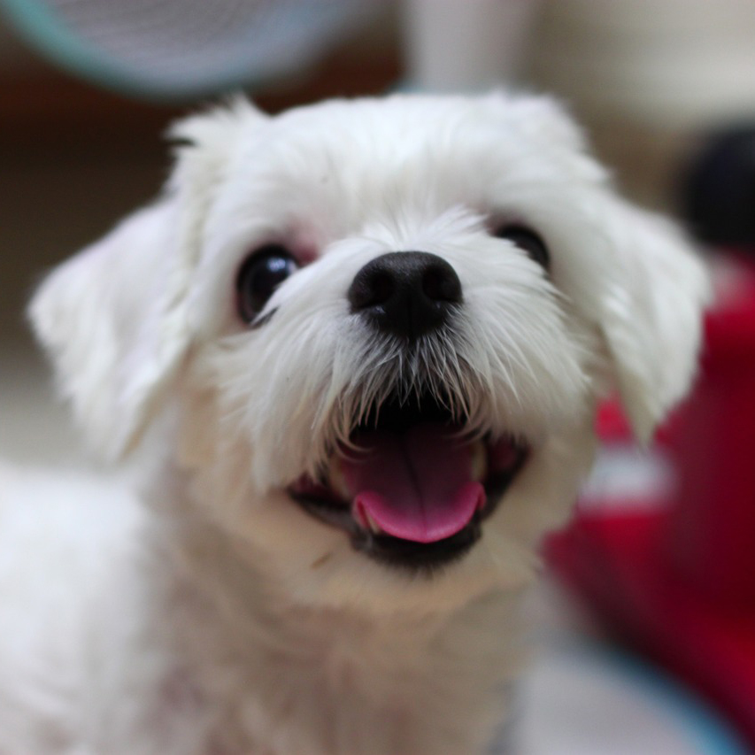
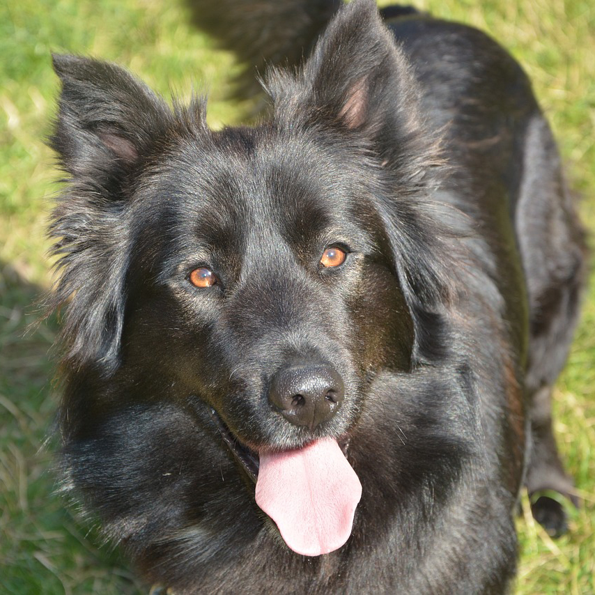
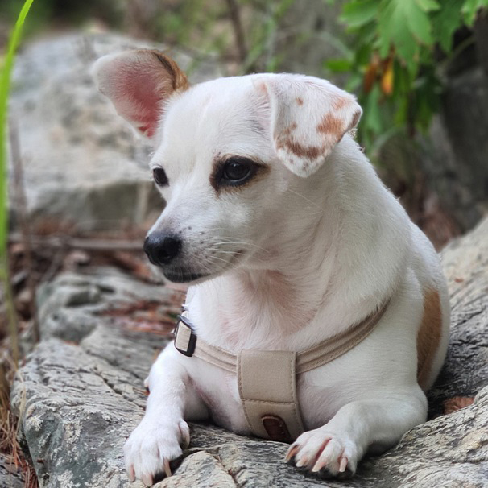

Adopt Animals
포인핸드 소개
ABOUT PAWINHAND
포인핸드가 만들어가는 사지 않고 입양하는 문화에 여러분도 함께해주세요.

반려동물 실종 시 전단지와
보호동물 공고를 통해
안전한 귀가를 돕고있습니다.

입양 후 건강하고
행복한 생활을 위해
입양한 유기동물의
건강검진을 지원하고 있습니다.

전국 유기동물 보호소에
구조된 유기동물
알림 서비스를 통해
입양을 돕고 있습니다.

유기동물 입양 후
건강하고 행복한 생활을 위해
다양한 혜택을
지원하고 있습니다.
포인핸드 활동
PAWINHAND ACTIVITIES
01
포인핸드x마하그리드 캠페인

포인핸드와 패션 브랜드 마하그리드가 함께 하는 유기동물 입양 캠페인. 입양된 동물과 동물을 맞이하는 새로운 가족은 모두 유기동물 입양 문화에 긍정적인 영향을 미치는 ‘포지티브 인플루언서’라는 메시지를 담았습니다. 콜라보 컬렉션은 반팔 티셔츠, 반바지, 모자, 반려동물 의류, 이동 가방 등으로 구성되었으며, 제품 판매 수익금 일부는 유기동물을 위한 후원금으로 사용됩니다.
02
유기동물 입양자를 위한 ‘포인핸드몰’ 오픈

포인핸드몰은 유기동물 입양자들이 필요한 입양용품을 합리적인 가격에 제공함으로써 입양용품 선택에 도움을 주고 경제적인 부담을 덜어주기 위해 만들어졌습니다. 판매 수익금 일부를 가족을 기다리는 유기동물들에게 양질의 사료로 기부하는 등 유기동물 입양 활성화를 위한 선순환을 만들어갈 계획입니다.
03
지디아 지하철 입양홍보 캠페인

유기동물 입양에 대한 사회적 인식개선과 올바른 입양문화를 형성하기 위해 지디아와 함께 유기견 입양 캠페인을 진행합니다. 지하철 1~4호선의 디지털 종합안내도에서 '나의 평생가족이 되어줄래?'라는 제목의 평생가족을 찾고 있는 유기동물들을 소개하는 배너 광고가 24시간 송출됩니다. 지하철을 이용하다 가족을 기다리는 유기동물을 만난다면, 큐알코드를 인식해보세요! 유기동물의 자세한 정보와, 가족을 찾고 있는 더 많은 친구들을 볼 수 있습니다.
04
포인핸드 X 코오롱 에피그램 캠페인
‘So Happy With U’
‘So Happy With U’

코오롱 라이프스타일 브랜드 '에피그램'과 함께 유기견 입양 활성화 를 위한 캠페인을 진행했습니다. 반려동물과 함께하는 사진을 공유하는 캠페인에 통해 마련된 약 468kg의 사료를 포천 유기견 보호소 애신동산에 기부할 수 있었습니다. 캠페인에 함께 해주신 모든 분들께 다시 한번 감사의 말씀을 전합니다.
유기동물 통계
ABANDONED ANIMALS STATISTICS
전국 모든지역 유기동물 현황 (2024년 06월 01일 ~ 2025년 03월 25일)
매년 전국적으로 10만 마리 이상의 유기동물들이 보호소로 구조되고 있습니다.
안타깝게도 이 중 절반에 가까운 동물들은 다시 가족을 만나지 못하고 안락사되거나 자연사하고 있습니다.
안타깝게도 이 중 절반에 가까운 동물들은 다시 가족을 만나지 못하고 안락사되거나 자연사하고 있습니다.
입양후기
ADOPT REVIEW

벌써 5년 차 가족. 처음 부터 있었던 듯 일상에 당연한 존재가 됐어요.

공고를 처음본 순간 얘는 우리집 가야겠다 라고 생각을 해서 데려왔습니다! 오래오래 행복하게 살아보겠습니다~

벌써 포인핸드를 통해 입양한지 4년이나 흘렀네요~ 지금은 15kg 몸무게를 자랑하는 연탄이랍니다.

저희집 막내로 많은 사랑을 받고있어요! 매일매일 5번 산책을 하며 함께 사는 강아지랑 잘 지내고 있어요.

사람도 너무너무 좋아하고 차에서도 얌전한 너무 착한 애기예요 ㅠㅠ 세상에서 젤 행복한 강쥐로 만들어줄게요.

입양 2달 후기예요. 처음에 2kg이었던 군밤이가 3.2kg으로 확대됐어요! 털도 풍성해지고 키도 훌쩍 자랐어요.

귀여운아가 입양해서 잘키우고있습니당ㅎㅎㅎ 많은 친구들과 재미있게 놀고있어요~

우리 구름이~ 너무순둥순둥 말도 잘듣고 건강하게 잘자라고 있답니다^^
더 보러가기